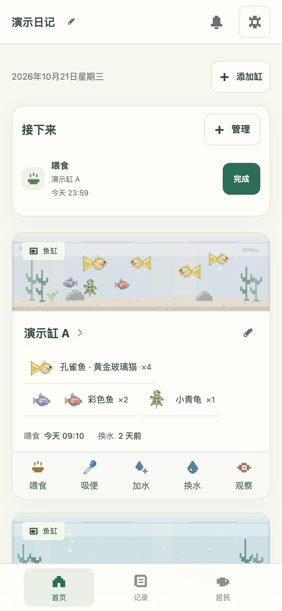
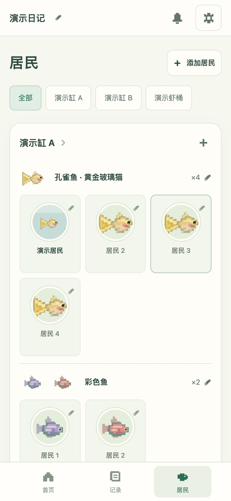
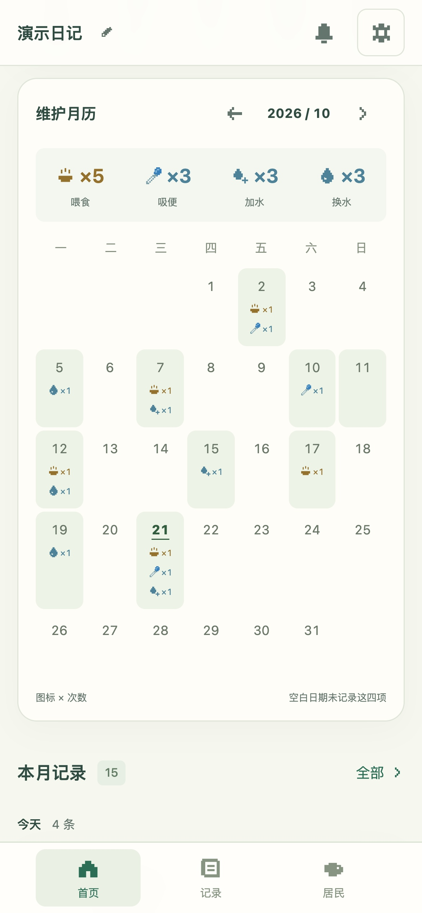
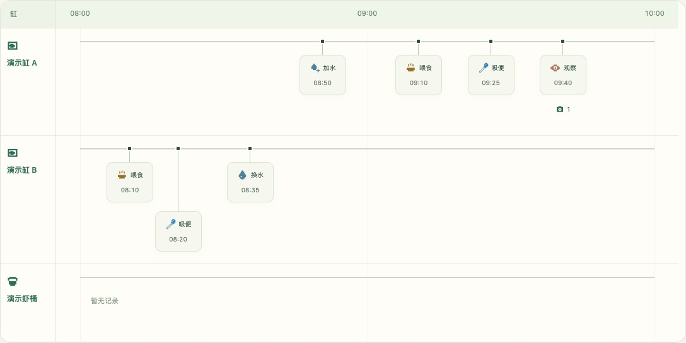
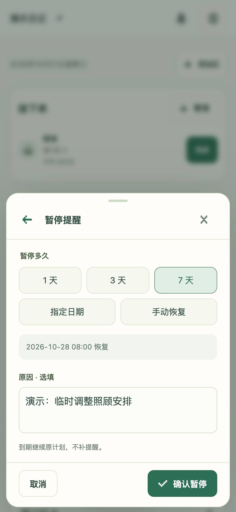

完整短片入口
GitHub将无限循环的4.2秒动图改为静态播放封面，明确标注完整短片24秒，点击进入播放器；保留已有图文介绍。


功能一览
喂食、吸便、加水记时间。
换水多少，也一起留下。

图标和次数，落在每一天。
一整月的照顾，一眼回看。
同一物种放在一起。
名字、形象和头像，由你来定。
真实界面 · 演示数据
真实界面 · 演示数据 · 原创配乐
下载短片 ↓03 / 回看日常

04 / 任务提醒
选好恢复日期，写下暂停原因。

Safari 打开日记，选择「共享 → 添加到主屏幕」。首次联网并完成缓存后可离线记录。Apple 官方说明 ↗
资料保存在当前浏览器。换设备或网址时，先导出「备份（含照片）」，再在新入口恢复。没有云同步。提醒在 App 内显示；导出的日历需手动导入，App 中暂停任务不会同步修改已导入的日历。
截图与短片使用隔离演示数据。名字和记录是示例，照片附件是项目像素插画。首次打开 App 为空白日记。移动端验证采用浏览器模拟，实体 iPhone 与 Safari 键盘仍需真机复核。
GitHub将无限循环的4.2秒动图改为静态播放封面，明确标注完整短片24秒，点击进入播放器；保留已有图文介绍。